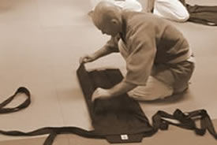

|
AIKIDO - A HARMÓNIA ÚTJAAz AIKIDO, a harcmûvészetek egyik, az egész világon egyre inkább elterjedt formája. Jelentõs technikai gazdagsága miatt, azonban gyakorlata és oktatása is egyénenként változhat. Az Aikido gyakorlása nyitott mindenki számára. Egyaránt lehetõséget nyújt kicsiknek és nagyoknak, férfiaknak és nõknek egy nagyobb testi és lelki egyensúly eléréséhez. Az aikido önmagunk mélyebb megismerésének eszköze: az ember harmonikus fejlõdésének az útja.Az AIKIDO szót három írásjel alkotja:
Ennek értelmében : Az AIKIDO az energiák egyesítésének vagy egyesülésének útja. AZ AIKIDO MINT HARCI TANAz Aikido a szamurájok által több évszázadon keresztül gyakorolt harci mûvészetek szintéziseként, a XXsz. folyamán Morihei Ueshiba (1883-1969) nagymester által megalkotott japán harci tan, amely a BUDO - szó szerint a harcos, vagy a harc útja - részét képezi. Ide sorolják a japán Harci Mûvészetek minden modern megjelenési formáját: a JUDO-t, a KARATE-DO-t, a KENDO-t (a kard útja) az IAIDO-t (a kard kirántásának útja) a KYUDOt (az íj útja), stb. Az Aikidot egyre inkább, mint harci tant, és nem, mint harcmûvészetet határozzák meg. Ez a szóhasználatbeli megkülönböztetés azért lényeges, mert harcmûvészet alatt többnyire szükség esetén háborús helyzetben is használatos harci, katonai technikát értünk. Azzal együtt, hogy az Aikido gyakorlatilag harci technikákból származik, alapítójának elképzelése többek között egy harci szellemben történõ, az egyéni lehetõségeket nem kizáró, az ember belsõ fejlõdésének elõsegítésére hivatott eszköz megteremtése volt (ami nem feltétlenül mondható el az igen komoly fizikai erõnlétet megkövetelõ, ténylegesen harci mûvészetekrõl). Az Alapító ezt így fogalmazta meg: "az Aikido célja nem a másik ember, hanem önmagunk hibáinak kijavítása. Ez pedig ne az egyén fizikai és spirituális pusztítását, inkább fejlesztését jelentse." Az Aikido gyakorlása így lehetõvé válik bármilyen korú, bármilyen fizikai adottságokkal rendelkezõ ember részére; a gyakorlás során kifejtett erõ intenzitása változhat a sportosnak mondott, magas szinten végzett intenzív gyakorlástól a szabadidõs tevékenységig. AZ AIKIDO TECHNIKÁJAAz Aikidonak sokféle gyakorlási formája létezik. Az Aikidot gyakorolhatják szabad kézzel vagy fegyverrel, egy vagy több, felfegyverzett vagy fegyvertelen ellenféllel szemben. Mindkét gyakorló lehet álló helyzetben vagy térdelõ ülésben, illetve az egyik állhat, miközben a másik térdel. A támadás formái lehetnek megragadások vagy ütések. Az Aikido technikái dobásokból, és leszorításokból állnak. A különbözõ mozdulatok igen sokszor veszik igénybe a felsõ végtagok, a csukló, a könyök, a váll, valamint a gerincoszlop ízületeit. Az elhajított fél gyakran mûködik közre saját zuhanásában, hiszen a legtöbb esetben ez az egyetlen módja annak, hogy elkerülje az érintett ízület sérülését. Az Aikidokák gyakran használnak fegyvereket: fából készült botot, kardot, kést. Ezek az eszközök nagyban elõsegítik a használatukból eredeztethetõ technikák megértését. A fegyverek szerves részét képezik a gyakorlásnak, mivel a velük végzett technikák az elsajátítandó szabadkezes technikák forrásai. Használatuk javítja a testtartást, finomítja a megfelelõ támadási távolság kialakítását, a pontosságot, a koncentrációt és a központ fogalmának megértését, mely utóbbi igen fontos szerepet tölt be az Aikido gyakorlásában. Egészen röviden definiálva, a központ (centrum) tulajdonképpen egy stratégiai alapot képez, mely lehetõvé teszi az Aikidokának, hogy a mozdulat középpontjában elhelyezkedve ellenõrzése alatt tarthassa ellenfelét. AZ AIKIDO NEM ÖNVÉDELMI TECHNIKAA harci mûvészetek legtöbbször, mint önvédelmi technikák kerülnek bemutatásra. Az Aikido esetében ez nem igaz. Önvédelem esetén van egy támadó és egy megtámadott, az Aikido gyakorlata és szellemisége viszont alapjaiban megkérdõjelezi ezt a fajta kettõsséget. Az Aikido célja definíciójából eredõen az egyesítés, nem pedig a szétválasztás. Ráadásul az önvédelem fogalma a megtámadott passzív, illetve késleltetett reakcióját feltételezi a támadóhoz képest. Technikailag ennek pontosan az ellenkezõjét kell tenni, azaz ellenõrzés alá vonni a támadót, mielõtt az bármit is kezdeményezne. AZ AIKIDO GYAKORLÁSALétezik egy fokozatok szerinti (viszonylagos) hierarchia a 6-tól az 1. KYUig, majd a fekete övvel az 1-tõl a 8-ik DANig, amelyek az egyén fejlõdését jelképezik az Aikido tanulmányozásában (néhány idõs mesternek tiszteletbeli címként odaadományozták a 9. és 10. dant). >>A Magyar Aikido Szövetség kyuvizsga anyaga A gyakorlás a DOJOban történik, ami szó szerint az "Út tanulmányozásának helyét" jelenti. A tan kizár bármiféle mérkõzést vagy versenyt. Egy edzés három fázisból áll: (1) Felkészülési fázis. Ez a szakasz ténylegesen a felkészülésnek, és nem egyszerûen a bemelegítésnek felel meg. A felkészülés célja a test elõkészítése az izmok aktiválására, ugyanakkor, és fõként egyfajta pszichológiai felkészülés a harci jellegû tevékenység tanulmányozására. Másfelõl, ebben a szakaszban tradícionális mozdulatokat is felfedezhetünk, melyek jelentõs szereppel bírnak a japán kultúrában. Figyelemre méltó tény, hogy, bár tisztán fizikai síkon, de számos nyújtással elõsegített lazító mozdulatot a modern "stretching" (sportnyújtás) is újra felfedezett. (2)Az alaptechnikák és alkalmazásaik tanulásának szakasza. (3)Visszatérés a nyugalmi állapotba.
>> Aikido Kihon Gi DVD sorozat
AZ AIKIDO ÉS MÁS HARCI MÛVÉSZETEK KÖZÖTTI KÜLÖNBSÉGEKAIKIDO ÉS JUDO Az Aikidot a Judotól néhány technikai elv különbözteti meg: AIKIDO ÉS KARATE A KARATE elsõsorban ökölcsapásokra és rúgásokra épül. Az ellenfelek közti távolság ennek megfelelõen alakul, és az Aikidotól eltérõen igen ritka a teljes test használata. Másrészrõl a KARATE, a JUDO és az IAIDO, mint annyi más japán harci mûvészet, tartalmaznak KATÁkat, vagyis olyan sztereotíp és elvileg megváltoztathatatlan mozdulatok láncolatát, melyek támadási szituációkat ábrázolnak, és amelyeket tantól függõen egy, illetve két személy hajt végre. AZ AIKIDO ÉS A FIZIKAI KÉPESSÉGEK FEJLÕDÉSEFizikai síkon az Aikido megmozgat minden izomcsoportot, méghozzá olyan módon, hogy a szervek legtökéletesebben együttmûködnek, A gyakorlás elõsegíti a jobb- és baloldal majdhogynem tökéletes egyensúlyát, ami minden bizonnyal egy jobb lelki egyensúly alapja is.
Fiziológiai szempontból az Aikido jelentõs mértékben javítja a légzést, amely lehetõvé teszi gyakorlója számára, hogy megfelelõen alkalmazkodhasson az edzés minden ritmusához. Az Aikido technikája nagyon komoly ízületi munkát kíván. Az Aikidoka fokozatosan növeli az ízületi feszítésekkel szembeni ellenállását, fokozza az ízületek mozgásának minõségét és hajlékonyságát, fõként a vállak, a csukló, és a boka szintjén. A harci tan fogalma alapvetõen feltételezi az ellenfélhez képest történõ elmozdulást. Az Aikidoban egyes gyakorlási formák során egyszerre több ellenféllel szembeni válaszadásra van szükség. Ez a helyzet a test nagyfokú mozgékonyságát, elmozdulási képességét követeli meg, a különbözõ ellenfelek pozíciójának gyors kiértékelésével együtt. Ez a képesség függ a test térbeli érzékelésétõl, valamint a koordináció funkcióitól. Nagyon fontos kiemelni, hogy az Aikido jelentõs elõnyökkel járhat a koordinációs képességek javulása terén. A gyakorló a mozdulatokat mind jobbra, mind balra végrehajtja szimmetrikusan, ez pedig egy nagyon kiegyensúlyozott izommunkát eredményez. Az Aikidonak, gyakorlói nagy jelentõséget tulajdonítanak az ellazulás szempontjából. A különleges helyzet (öltözet, nyelvezet, hely, rítusok...) a mindennapi élettõl való elszakadást jelenti. Számos Aikidoka számolt be alvásproblémái megszûnésérõl, fõként az elalvási nehézségeket említve. És sokak számára jelenti a hétköznapi stressz alóli feloldódás lehetõségét; számos gyakorló úgy ítéli meg, hogy az Aikido rendszeres, heti 2-3 alkalommal történõ gyakorlásának köszönhetõen újra kiegyensúlyozottá váltak.  Mint minden más fizika tevékenység esetében, itt is találkozhatunk teljes vagy végleges, és idõleges, valamint a fokozatok szerinti és az intenzív gyakorlás esetére vonatkozó ellenjavallatokkal. Mindenesetre tisztán orvosi szemszögbõl az ellenjavallatok száma csekély, ami azzal magyarázható, hogy az Aikido gyakorlata egyénenkénti változtatás terén nagyon nagy szabadságot tesz lehetõvé. Miután az Aikido nem versenysport, gyakorlása bármely életkorban elkezdhetõ, és hosszú távon folytatható. Más harcmûvészetekhez képest a gyakorlók átlagéletkora igen magas, és a folyamatos fejlõdést lehetõvé tévõ pszichológiai elõnyök is jelentõsek. Az Alapító élete végéig, 86 éves koráig gyakorolta az Aikidot. Végezetül pedig a balesetek igen alacsony száma egy további indok, amiért az orvosok nem haboznak pácienseiknek az Aikidot ajánlani. TÖRTÉNETI ÉS SZERVEZETI HÁTTÉRA második világháborút megelõzõen az Aikido a nagyközönség elõl rejtetten, csupán egy, a BUDO szakértõibõl, azaz nemesekbõl, katonai vezetõkbõl és magas rangú személyiségekbõl álló elitréteg számára volt hozzáférhetõ. A háború után az Aikido alapítója, Ueshiba Morihei mester úgy gondolta, a tant egész Japánban, sõt, az egész világon terjeszteni kell. Az Aikido központja - a Tokiói Aikikai Alapítvány és Hombu Dojo - jelenleg unokája, Ueshiba Moriteru vezetése alatt áll. (Az aikido történetérõl bõvebben: >> Donn F. Draeger: Aiki-do) Magyarországon az AIKIDO az 1980-as évek elején kezdet meghonosodni, és egyre népszerûbbé válni. A 80-as évek közepén megalakult Magyar Aikido Szövetség több európai szervezettel és mesterrel vette fel a kapcsolatot, így az Aikido hazai fejlõdése és elterjedése felgyorsult. A mai napig, a legnagyobb jelentõségû kapcsolatot az 1964 óta Franciaországban élõ Tamura Nobuyoshi Shihan (Nagymester) meghívása eredményezte. Tamura Sensei, aki az alapító egyik legkiemelkedõbb közvetlen tanítványa volt és 2010-ben bekövetkezett haláláig az egyik legnagyobb európai aikido szervezet (FFAB) technikai vezetõje, a 80-as évek végétõl éves rendszerességgel látogatott hazánkba. Nobuyoshi Tamura Shihan1933 - 2010>>N. Tamura: Aiki alapfogalmak A TenJinChi Dojo a Magyar Aikido Szövetség és a Ecole de BUDO - RAJI International tagja, egyben a Magyarországi RAJI Budoiskola központja. Az iskola a Franciaországban élõ Jaff Raji Sensei iránymutatásával mûködik. TJC csoport 2010 május: Felszerelés: keiko gi, amely megegyezik a judoban használt edzõruhával; obi (fehér öv); zori (papucs), amely kötelezõ a tatamin kívüli közlekedésnél; hakama (hagyományos hajtogatott japán nadrág, amelyet 2. kyu-tól hordanak); bokken (fából készült kard); jo (1.28 méter hosszú bot); tanto (fából készült kés). *A szöveg a Jaff Raji honlapján található francia eredeti alapján készült. A magyar szöveg elkészítésében közremûködött: Varga Beáta, Vincze Gábor, Gollob Szabolcs * TV interjú: * KÖNYV: * AIKIDO DVD SOROZAT: * Videóink a YouTubeon: Fotóalbumok:
|
| Tenjinchi Dojo | EBR International | Raji Ukemi Fitness | Aikido | Jodo | Iaido | Gyerekcsoport | Órarend | Tanárok Hírek/Események | Fotók / Videók | Olvasnivaló | Linkek |